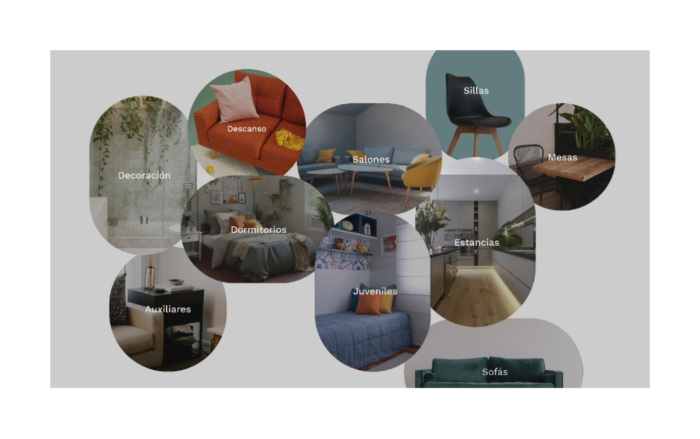
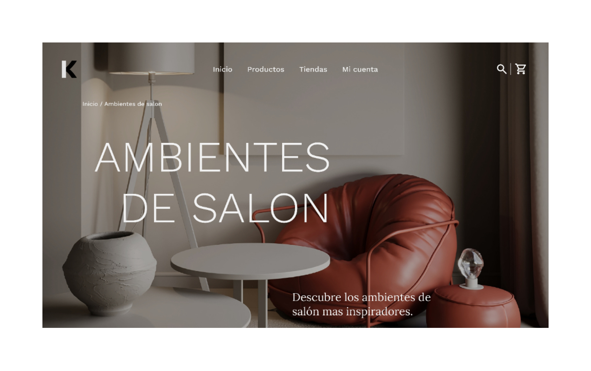
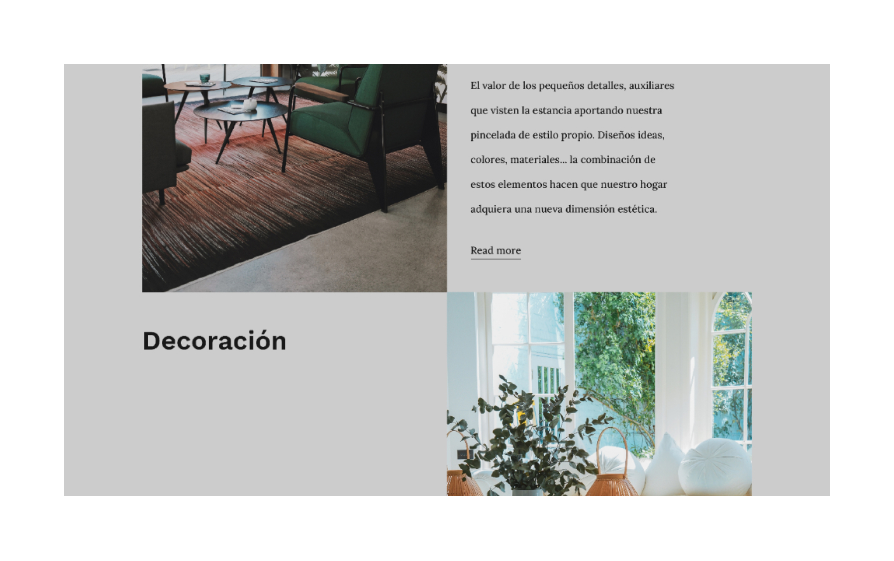
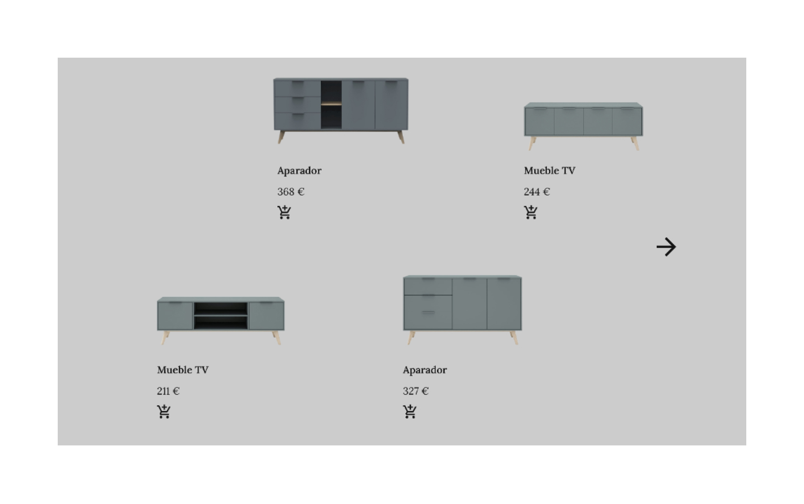

Merkamueble
— Web redesign
This project presents a redesign of the "Ambientes de Salón" section of the Merkamueble website, emphasizing a typographic and visual overhaul to improve user engagement and aesthetic appeal.
The redesign focuses on establishing a clean, modern interface that blends functionality with a visually striking presentation.


Typography: A dual approach was employed, using a bold, modern font for headers and a clean, utilitarian font for body text, ensuring clarity and readability. All fonts were selected from Google Fonts to maintain accessibility and quality. Visual Hierarchy: A revamped layout enhances the navigation experience, using a 12-column grid to create a balanced and structured design.

Imagery and Content: The images were carefully selected to replace the originals, maintaining relevance while adding a fresh, modern aesthetic. All content from the original page was preserved and reorganized to improve usability. Brand Adaptation: A new typographic reinterpretation of the Merkamueble logo was introduced to align seamlessly with the updated graphic language.
The final design was implemented in Adobe XD on a 1,366px-wide artboard, with deliverables including high-quality PNG images and an editable Adobe XD file to verify proper use of resources.

